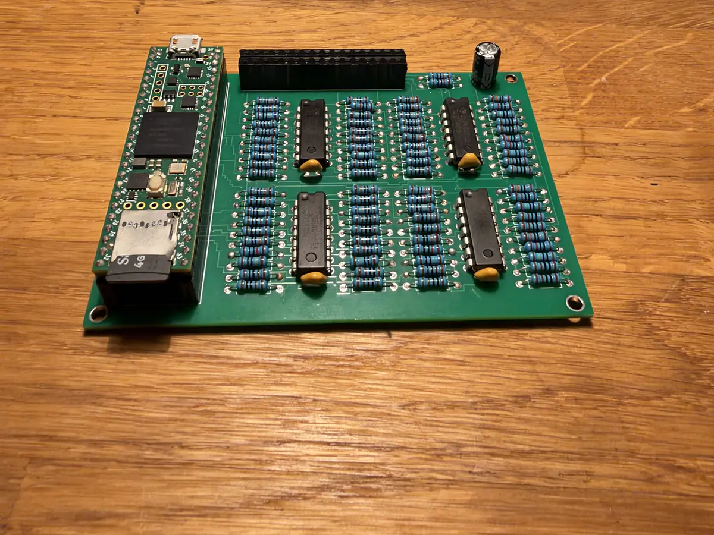
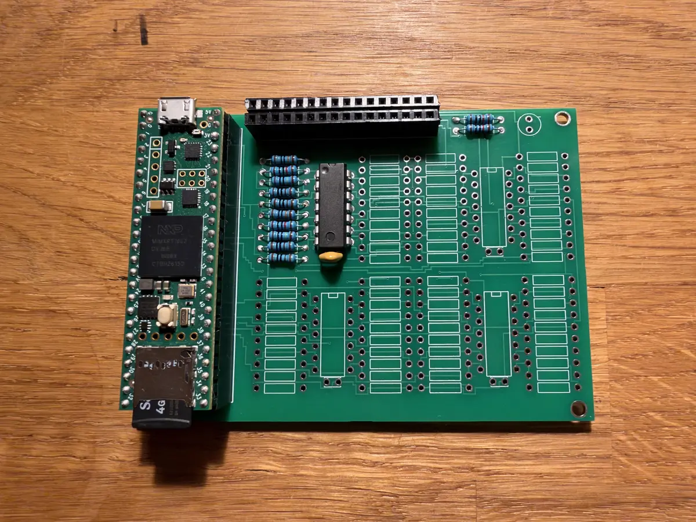
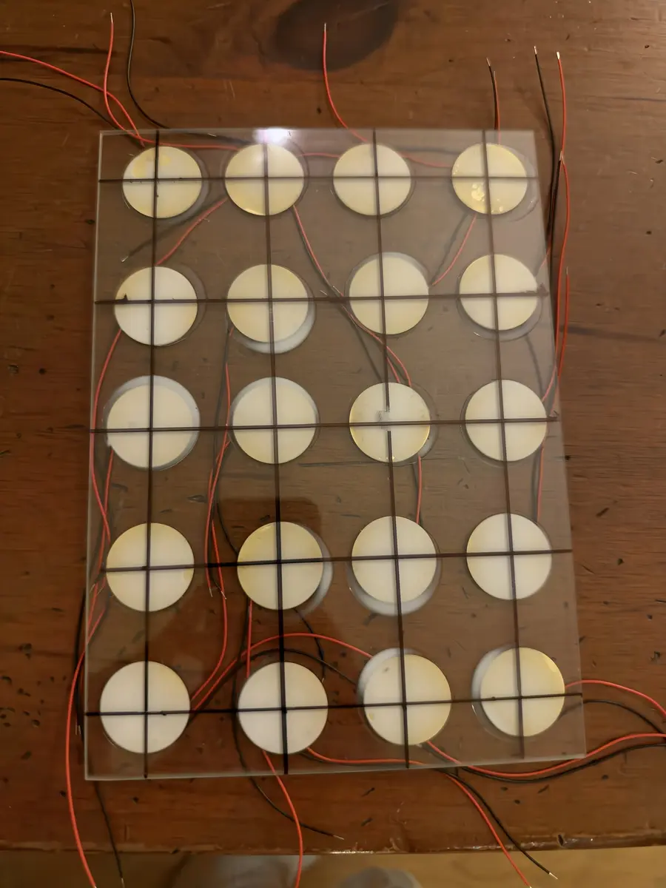
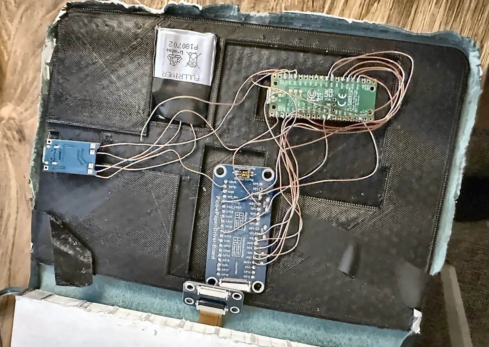
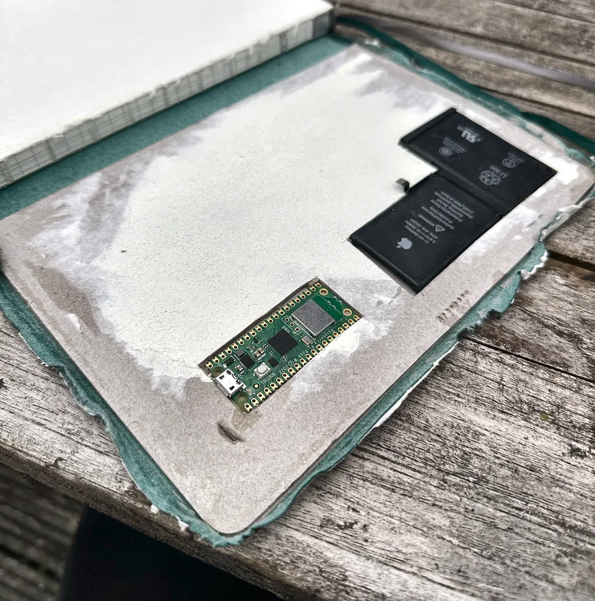
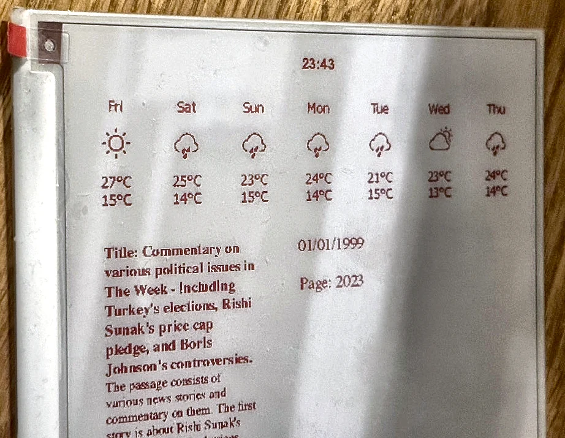

Embedded systems · In progress
Handwriting capture for a paper notebook
I think better on paper, but nothing on a paper page is searchable. I'm building a notebook that turns handwriting into text without changing the pen, the paper or how I write, and shows a summary on an e-paper display in the cover.

Aim
The first version put an e-paper display in the cover and showed summaries of recent pages. It worked, but every page had to be photographed first. That extra step is the kind of distraction I want the notebook to remove. The aim now is technology you don't notice: any pen or pencil, ordinary paper, and nothing to do except write.
Planned features:
- Swappable paper pads, each labelled when inserted.
- Written commands:
##followed by a sentence creates a phone reminder, and@creates a calendar entry. - The e-paper inside cover as a live contents page.
I'm working on two ways of capturing the writing: recognising it from the sound of the pen through a phone microphone, and locating the pen with an array of piezo sensors under the page.

Track 1: recognising handwriting from sound
I wrote an iOS app in Swift that shows a sentence prompt and records 48 kHz audio and 100 Hz accelerometer and gyro data while I write it. The dataset is 178 clips over three sessions: one writer, one pen, A4 paper on a desk, with the phone lying next to it.
The model takes log-mel spectrograms with the noise floor subtracted and runs them through a 3-layer CNN and a 2-layer BiGRU, trained with CTC loss (about 400k parameters) and SpecAugment. I trained it on a MacBook.
On held-out sentences, greedy decoding gave a 30% character error rate and 77% word error rate. A beam decoder constrained to a lexicon of the 60k most frequent English words, weighted by frequency, brought this to 24% CER and 51% WER. "borrow a drill from jake" came out as "borrog a dril frum cake". Published phone-microphone work reports 50 to 88% word accuracy.
- Individual letters show as broadband bursts 10 to 20 dB above the background.
- Errors follow stroke shape: b/p, m/n, d/t and o/e.
- Training error was about 3%, so the model needs more data.
- Moving the phone between sessions reduces accuracy, so its position has to be fixed.
- Almost every output ended in a spurious "t". It was the sound of my hand lifting off the page before I tapped stop. Cropping clip endings in augmentation made things worse (CER 0.67) because it cut real letters. Tapping stop with the other hand fixed it.
Track 2: locating the pen with piezo sensors
Vibration from the pen reaches each piezo disc at a slightly different time. The differences in arrival time give the pen's position. I've found few other projects using this for handwriting.
The first prototype had four 20 mm piezo discs on a 4 mm glass plate, each with a TL074 preamp at a gain of 101, sampled by a Teensy 4.1 at 120 kHz per channel. The measured wave speed in the glass was about 438 m/s. The median tap localisation error was about 20 mm: 8 to 12 mm in the centre and worse at the corners. That is enough for word or line position and pen-down detection, but not for letter shapes, mainly because of dispersion and reverberation in the plate.
The next version uses a 4×4 grid of discs on an A5 plate, sampled at 100 kHz per channel using the Teensy's hardware ADC chaining (ADC_ETC), so the CPU only copies results out and the sample clock has no jitter.


The amplifier board
I designed three variants of the amplifier PCB and had the compact through-hole one (98 × 69 mm) built by JLCPCB.
I also wrote a separate checker, verify_gerber.py, that
rebuilds the copper connections from the Gerber files and compares them
with the circuit netlist. It found a wrong Teensy pin order in all three
designs before I ordered the corrected boards.
On the host side there is a multiprocess serial capture, which took dropped frames from about 4% to zero, a live 16-channel viewer, and offline and live localisation scripts.
Bring-up
- The board streams 16 channels at 100 kHz with no dropped frames. Noise on empty channels is 1 to 2 counts rms in the 2 to 15 kHz band.
- Signals appeared copied onto later channels in the conversion order, which looked like an ADC firmware fault. The cause was unpopulated channels with floating ADC pins reading back charge from the previous conversion. Populated channels don't do this, so no firmware change was needed.
- Mains noise came from the laptop charger and disappears on battery.
- Firm taps clip because most of their energy is plate ringing at 300 to 500 Hz. A high-pass in the front end (a capacitor in series with Rg and a smaller Rb) should stop it saturating the amplifiers.
Power
The target is two weeks between charges at about an hour of writing a day, from a 1000 to 1500 mAh LiPo. That means under 40 mA while writing, under 50 µA open and idle, and a few µA closed. A passive piezo tap detector wakes the system, accepting that the start of the first stroke is lost. The e-paper proof of concept runs on a Pico W, and the final version will use a lower-power controller.
Next
- Fit the front-end high-pass, then record real pen strokes with my hand resting on the plate.
- Populate all 16 channels and try 3 mm acrylic in place of glass.
- Grow the audio dataset to about 400 clips and repeat with the phone on the notebook cover.
Not yet done: pen-stroke localisation, recognition with other writers or pens, and full stroke-trajectory reconstruction.
Version 1: the e-paper cover
The display side is built. I cut a recess into the back board of a hardback notebook and fitted a cell, charger, Pico, driver board and a 7.5-inch three-colour Waveshare panel. The cover still closes.

Cell Pico USB-C charger Driver board Ribbon to panelIn version 1, pages were photographed and turned into text in a watched folder. Four separate language-model calls corrected the spelling, wrote a short title, summarised the page in under forty words and extracted a date. Splitting them made each one more reliable than a single combined call. The results went into a JSON store, which a local web page rendered alongside a weather forecast. A headless browser screenshotted that page at the panel's resolution and reduced it to a one-bit image per colour, and the Pico pulled the image and drove the panel. Laying out text and icons in HTML was much simpler than doing it on the microcontroller.
A full-panel image is larger than the Pico can comfortably hold, so I wrote a set of compression experiments in C to find a format small enough to move and cheap enough to decode.


The photo shows the fallbacks working. The date reads 01/01/1999, which the code returns when it can't find a date. The page number is wrong, and the title is most of a paragraph. In each case the model ignored the fixed output format and a regex behind it had to parse prose. Next time I'd use constrained decoding for the machine-readable fields.
← All projects